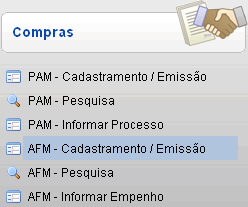
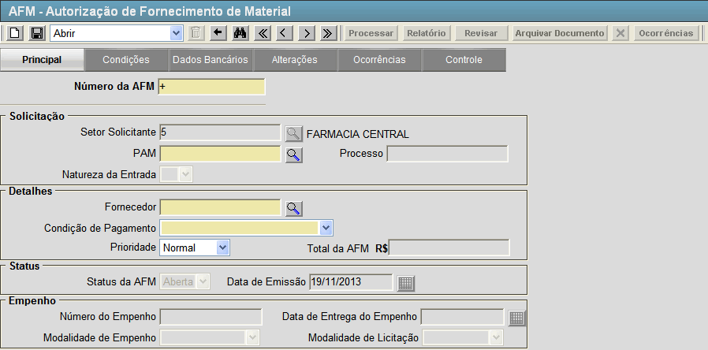
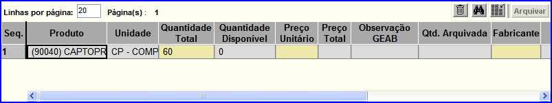
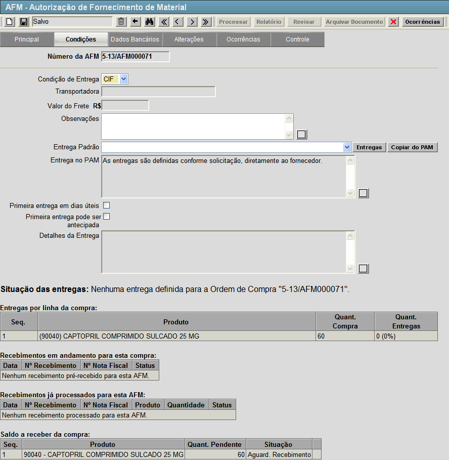
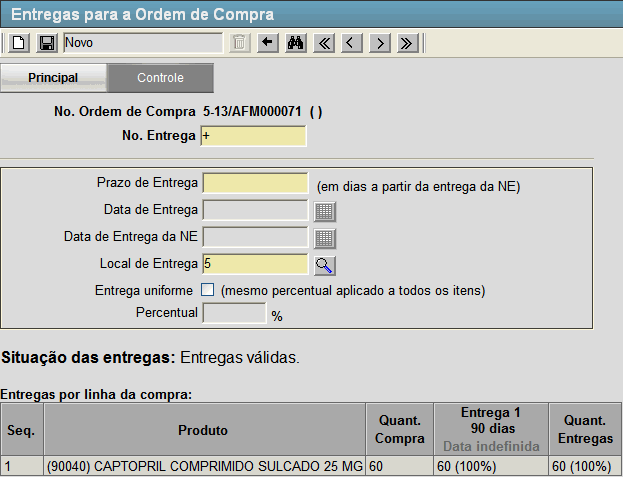
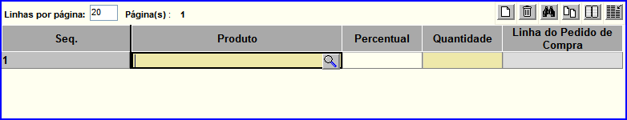
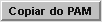
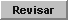
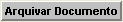
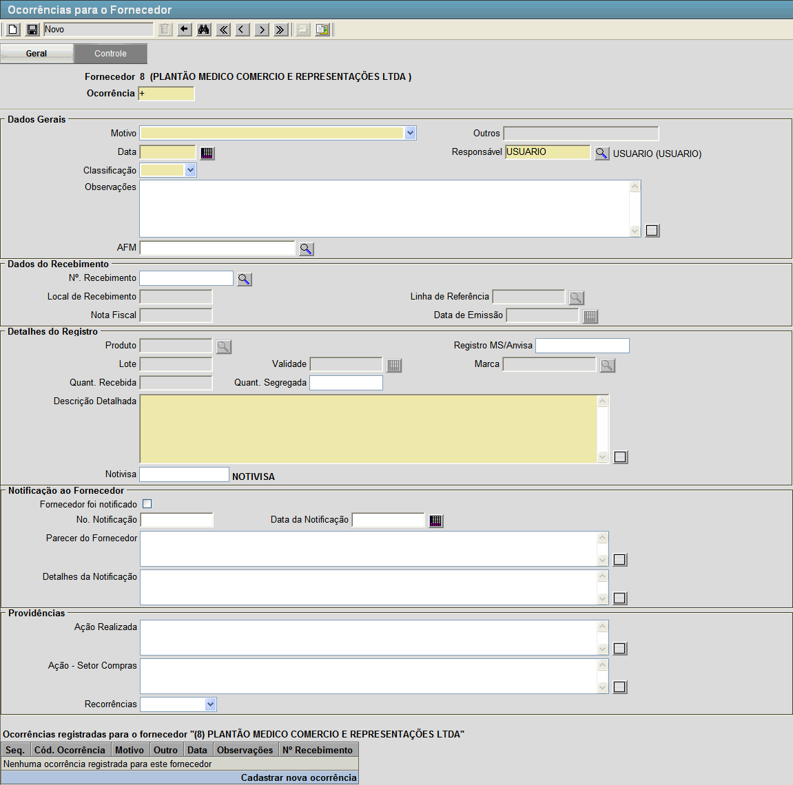

AFM - Cadastramento / Emissão [ Voltar ] Utilize esta
tela para registrar no sistema uma Autorização de Fornecimento de Material - AFM.
O formulário "AFM - Cadastramento / Emissão"
encontra-se dentro do menu "Compras - Compras".

Ao clicar no formulário, o sistema exibirá a seguinte
tela:

Para cadastrar uma AFM, siga os passos
abaixo:
1º
Passo: preencha os campos do formulário. Lembre-se que os campos em amarelo são
obrigatórios.
- Número da AFM. Por padrão, este campo contém o sinal "+". Desta forma, quando o registro é
salvo, é-lhe atribuído o próximo número disponível à AFM.
- PAM. Entre aqui com o número do PAM que será associado a AFM. Clique no botão
 [Pesquisar] para selecioná-lo por meio de uma listagem contendo todos os PAM cadastrados. [Pesquisar] para selecioná-lo por meio de uma listagem contendo todos os PAM cadastrados.
- Fornecedor. Entre aqui com o código do fornecedor associado a AFM. Clique no botão [Pesquisar] para selecioná-lo por meio de uma listagem contendo todos os fornecedores cadastrados.
- Condição de Pagamento. Selecione aqui entre as opções: "Antecipado",
"À vista contra entrega", "3 dias", "10 dias", "30 dias", "45 dias",
"60 dias", "90 dias", "120 dias", "Com entrada", "50% dias úteis e
restante 60 dias", "Doação / Quitado - Incorporação" e "Incorporação Ministério da Saúde".
- Prioridade. Classifique aqui a AFM de acordo com sua prioridade. As opções são: "Normal", "Urgente" e "Emergente".
Após preencher corretamente todos os campos do formulário clique no botão  [Salvar] para armazenar o registro. [Salvar] para armazenar o registro.
2° Passo: preencha na grade as informações dos materiais. Assim que o registro é salvo, aparecerá uma grade preenchida com os materiais referentes ao PAM. Conforme figura abaixo. 
Os campos necessitados de preenchimento são:
- Quantidade Total. Este campo é previamente preenchido com a quantidade solicitada no PAM, caso seja necessário alterar este valor mude-o aqui.
- Preço Unitário. Insira aqui o valor individual de cada produto.
- Fabricante. Entre aqui com o código do fabricante do produto.
Após configurar os produtos clique no botão [Salvar] para armazenar as novas informações.
3° Passo: configure as condições da AFM. Clique na aba "Condições" para especificar o cronograma da entrega da ordem de compra.

Nesta
tela, você pode selecionar entre modelos de entrega pré-definidos,
configurar um modelo de entrega ou copiar a forma de entrega do PAM. Caso queira selecionar entre os
modelos de entregas pré-definidos as opções são:
- "Conforme solicitação";
- "30% em 10 dias e 7 mensais de 10%";
- "100% em 30 dias";
- "100% em 60 dias";
- "100% em 90 dias";
- "100% em 10 dias";
- "100% em 20 dias";
- "25% em 10 dias e 3 mensais de 25%";
- "40% em 10 dias e 2 mensais de 30%";
- "100% em 5 dias";
- "50% em 10 dias e 50% em 40 dias";
- "20% em 10 dias e 4 mensais de 20%";
- "30% em 10 dias, 2 mensais de 15% e 4 mensais de 10%";
- "30% em 10 dias, 20% em 40 dias e 5 mensais de 10%";
- "100% em 15 dias";
- "25% em 90 dias e 3 mensais de 25%" ; e
- "20% em 90 dias e 4 mensais de 20%".
Caso queira customizar a forma de entrega, clique no botão  [Entregas]. O sistema abrirar a tela abaixo: 
Nesta tela, configure os pazos de entrega de cada produto do PAM, conforme sua necessidade. - Digite o número da entrega no campo "N°. da entrega"
e o prazo de dias em que esta deve acontecer (por exemplo: entrega 1,
10 dias após a entrega da nota de empenho; entrega 2, 20 dias após a
entrega da nota de empenho, etc). Defina também o local de entrega da requisição.
- Clique no botão [Salvar]
para salvar a entrega. Assim que a entrega é salva, uma grade para
inclusão do conteúdo da entrega é exibido na parte inferior da tela.

- Informe
os produtos e quantidades que deseja para esta entrega. Se desejar
entregas uniformes, marque a opção "Entrega uniforme?" para que o mesmo
percentual seja aplicado a todos os itens. Em seguida, especifique o
percentual no campo de mesmo nome na grade.
- Clique no botão [Salvar] para concluir esta entrega.
- Para criar outras
entregas que comporão o cronograma, siga novamente os passos de customização de entregas.
Após
personalizar as entregas, clique no botão  [Voltar] para retornar a tela "AFM - Autorização de Fornecimento de Material". [Voltar] para retornar a tela "AFM - Autorização de Fornecimento de Material".
Caso queira copiar o modelo de entrega do PAM, clique no botão [Copiar do PAM], que os detalhes da entrega serão preenchidos de acordo com a entrega no PAM.
4° Passo: clique no botão  [Processar] para concluir a criação da AFM.
Assim que o registro é processado os seguintes botões se tornarão
habilitados: [Processar] para concluir a criação da AFM.
Assim que o registro é processado os seguintes botões se tornarão
habilitados:
-
 [Relatório]. Clique neste botão para visualizar e imprimir o relatório "AFM - Autorização de Fornecimento de Material". [Relatório]. Clique neste botão para visualizar e imprimir o relatório "AFM - Autorização de Fornecimento de Material".
-
[Revisar].
Caso algum dado da ordem necessite de revisão, clique neste botão
para alterá-lo. Após revisar o pedido, é necessário repetir o 4°
passo e processar novamente a AFM.
- [Arquivar Documento]. Clique nesse botão para arquivar a AFM, será necessário indicar o motivo do arquivamento.
Observação:
só é possível revisar ordens que não estejam vinculadas a um registro
de recebimento.
5º Passo (Opcional): clique no botão  [Ocorrências]. [Ocorrências]. Caso exista algum problema referente ao Fornecedor desta AFM, clique neste botão e você será redirecionado para a tela " Ocorrências para o Fornecedor", conforme figura abaixo. 
Preencha nesta tela todos os dados do ocorrido, assim como as providências tomadas e a notificação ao fornecedor.
|